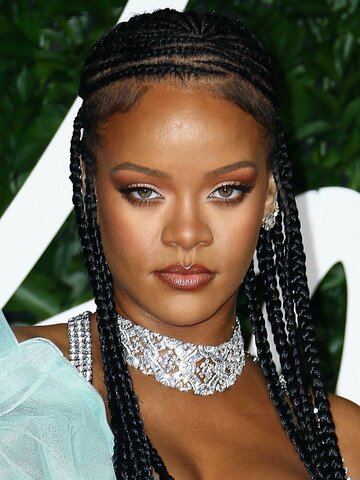
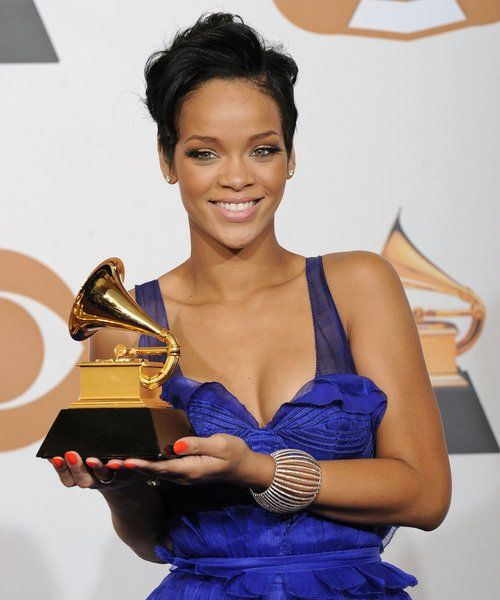
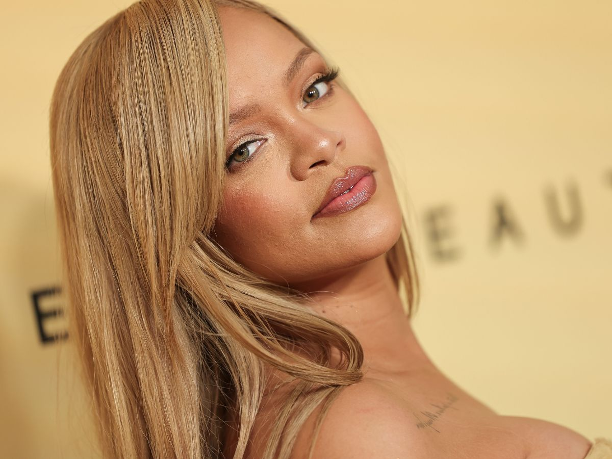
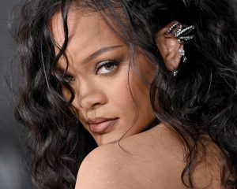

Rihanna (born February 20, 1988, St. Michael parish, Barbados) is a Barbadian pop and rhythm-and-blues (R&B) singer who became a worldwide star in the early 21st century. She is known for her distinctive and versatile voice and for her fashionable appearance. She is also known for her beauty and fashion lines.
Barbadian singer Rihanna has received multiple awards and nominations for her work in music, film, and fashion. Her music awards are predominantly in pop, R&B, and hip-hop genre categories. Rihanna's first single, "Pon de Replay" led her to win five awards, following her achieving further accolades for both herself and her debut album, Music of the Sun (2005). Her second album, A Girl Like Me (2006), earned the singer more awards and nominations. Rihanna's third studio album, Good Girl Gone Bad (2007), became Rihanna's breakout album, with the singer receiving a string of awards and nominations in newer categories such as pop and R&B genres. The lead single, "Umbrella" earned Rihanna her first Grammy Award in 2008, while the album's singles and DVD earned a further eight nominations throughout 2008 and 2009. It was named 'Song of the Decade' at the Barbados Music Awards in 2010. Rated R (2009), Rihanna's fourth studio effort, produced the single "Rude Boy" which became the main provider of awards and nominations from the album. It was nominated for 'Song of the Year' at the MTV Europe Music Awards. In 2010, Rihanna's collaboration with Jay-Z and Kanye West, "Run This Town" won Rihanna her second and third Grammy Awards for Best Rap Song and Best Rap/Sung Collaboration. Rihanna released her fifth studio album, Loud in 2010. It received many nominations including two Grammys for Album of the Year and Best Pop Vocal Album. Furthermore, its lead single, "Only Girl (In the World)" won Best Dance Recording, while the second single "What's My Name?" received a nomination in the same category. Also in 2011, Rihanna collaborated on the worldwide hit single "Love the Way You Lie" with Eminem. The song earned a string of nominations and awards including being nominated for six Billboard Music Awards and three Grammy Awards. Kanye West's single "All of the Lights", released in 2011 and featuring Rihanna as a credited artist, was nominated for three awards at the 2012 Grammy Awards, ultimately winning Best Rap Song and Best Rap/Sung Collaboration. Rihanna released her sixth studio album, Talk That Talk in 2011, earning the singer an American Music Award. Its lead single, "We Found Love" was nominated for many awards, most notably winning the MTV Video Music Award for Video of the Year in 2012 and Best Short Form Music Video at the 55th Grammy Awards in 2013. Two further releases from the album, the title track featuring Jay-Z and "Where Have You Been" also received Grammy nominations. Unapologetic (2012), Rihanna's seventh studio album, produced the lead single "Diamonds" which gained the singer several awards and nominations. Rihanna has won 9 Grammy Awards, 12 Billboard Music Awards, 13 American Music Awards (including the Icon Award), and 7 MTV Video Music Awards (including the Michael Jackson Video Vanguard Award).
In addition to her musical career, Rihanna acted in the movies Battleship (2012) and This Is the End (2013). She also voiced one of the main characters in the animated adventure Home (2015). Rihanna later appeared as a hacker in Ocean’s 8 (2018), a female-driven reboot of the Ocean’s Eleven franchise from the early 2000s. In 2019 she starred with Donald Glover in the musical Guava Island; it premiered at the Coachella Valley Festival before streaming on Amazon. After collaborating on several cosmetics collections in the early 2010s, Rihanna launched her own line, Fenty Beauty, in 2017. The brand was enthusiastically embraced by fans and was praised for its inclusivity in offering 40 different shades of foundation. She later launched (2018) Savage X Fenty, a clothing line of lingerie and loungewear. In 2019 it was announced that Rihanna was partnering with LVMH Moët Hennessy—Louis Vuitton to create the fashion line Fenty. She thereby became the first woman of color to head a fashion house at LVMH, which was the largest luxury-products company in the world. Fenty’s first collection was released later that year. However, the line struggled, and in 2021 it was announced that Fenty was being paused “pending better conditions.”
Rihanna’s personal life attracted intense media attention. Her tumultuous relationship with Brown, especially the 2009 domestic violence incident, was fodder for the tabloids. She later dated Canadian rapper Drake. In 2021 it was confirmed that Rihanna was in a relationship with rapper A$AP Rocky. The couple welcomed a baby boy the following year. In 2023 Rihanna revealed she was again pregnant by performing at the Super Bowl halftime show with a visible baby bump; her representatives subsequently confirmed that the singer was expecting her second child. In August that year Rihanna gave birth to her second son.
